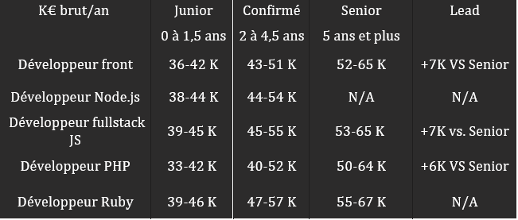

Demande d’abondement CPF
Raguel Tania
Le développeur web / la développeuse réalise l'ensemble des fonctionnalités techniques d'un site ou d'une application web. Technicien ou ingénieur, il ou elle conçoit des sites sur mesure ou adapte des solutions techniques existantes en fonction du projet et de la demande du client.
Activités principales :
Réalisation de l’analyse technique (Sous la responsabilité du chef de projet)
Analyser les besoins du client spécifiés par la maîtrise d’ouvrage et les traduire en cahier des charges techniques.
Ecrire les spécifications techniques générales et détaillées en envisageant les problèmes éventuels et les évolutions.
Développement des applications :
Rédiger les lignes de codes nécessaires à la création d’un produit web, pouvant contenir du texte, des images, de la vidéo et/ou du son.
Appliquer les règles de navigation, créer des liens entre les pages.
Développer les interfaces.
Corriger et optimiser les fonctionnalités (qualité, charte graphique, ergonomie...).
Documenter les applications pour les développements ultérieurs et la mise en production.
Tests et écriture des corrections nécessaires :
Préparer et réaliser les tests unitaires.
Réaliser les tests de charge.
Apporter les correctifs nécessaires après ces tests ou aux tests fonctionnels réalisés par les utilisateurs ou la maîtrise d’ouvrage.
Maintenance corrective et évolutive des applications :
Assurer les corrections aux problèmes soulevés (bugs).
Prendre en compte les évolutions des solutions techniques existantes.
Assurer la programmation des évolutions demandées par les utilisateurs.
Il faut également prendre en compte qu’il existe plusieurs métiers dans le métier de développeur, le développeur front qui travaillera sur la l’interface d’un site, le développeur back-end travaillera sur la partie non visible comme la base de données, le serveur etc., enfin le développeur fullstack peut travailler aussi bien sur le back et le front end.
Les développeurs peuvent être aussi désigné selon leur langage de spécialisation ou de l’API maitrisé (ex : javascript, Ruby, PHP, Symphony…)
Il travaille au sein d'une agence de communication, en freelance, en SSII ou directement en entreprise. ... Il peut s'agir de sites Intranet, de sites internet, d'applications web ou d'outils en ligne.
Le développeur web s’intègre généralement dans une équipe, il peut aussi bien travailler dans un bureau ou depuis son domicile.
En moyenne un développeur en début de carrière gagnera 1920€ net et 2740€ pour un développeur confirmé.
Son salaire pourra également variée selon les langages connues (ex ci-dessous), les années d’expériences et son lieu de travail.
>